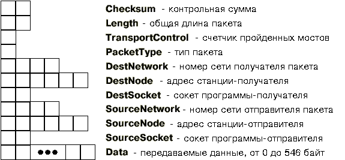
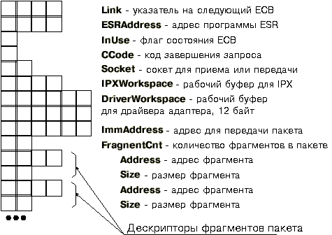

2.1. Формат пакета IPX
2.2. Работа с драйвером IPX/SPX
2.3. Основные функции API драйвера IPX
2.4. Простая система "клиент-сервер"
2.5. Пример c использованием ESR
2.7. Определение топологии сети
Протокол IPX предоставляет возможность программам, запущенным на рабочих станциях, обмениваться пакетами данных на уровне датаграмм, т. е. без подтверждения.
В сети Novell NetWare наиболее быстрая передача данных при наиболее экономном использовании памяти реализуется именно протоколом IPX. Протоколы SPX и NETBIOS сделаны на базе IPX и поэтому требуют дополнительных ресурсов. Поэтому мы начнем изучение программирования для локальных сетей именно с протокола IPX.
Если на рабочей станции используется операционная система MS-DOS, функции, необходимые для реализации протокола IPX, реализуются резидентными программами ipx.com или ipxodi.com, входящими в состав сетевой оболочки рабочей станции сети NetWare.
Для того чтобы научиться составлять программы, которые могут передавать данные по сети с использованием протокола IPX, вам необходимо познакомиться со структурой пакета IPX (вам придется создавать такие пакеты) и научиться пользоваться функциями IPX, реализованными в рамках сетевой оболочки рабочей станции. Вначале мы познакомим вас со структурой пакета IPX, затем займемся функциями.
Формат передаваемых по сети пакетов представлен на рис. 2.

Пакет можно разделить на две части - заголовок и передаваемые данные. Все поля, представленные на рис. 2, кроме последнего (Data), представляют собой заголовок пакета. Заголовок пакета выполняет ту же роль, что и конверт обычного письма - там располагается адрес назначения, обратный адрес и некоторая служебная информация.
Особенностью формата пакета является то, что все поля заголовка содержат значения в перевернутом формате, т. е. по младшему адресу записывается старший байт данных, а не младший, как это принято в процессорах фирмы Intel. Поэтому перед записью значений в многобайтовые поля заголовка необходимо выполнить соответствующее преобразование. Представление данных в заголовке пакета соответствует, например, формату целых числел в компьютере IBM-370 (серия ЕС ЭВМ).
Рассмотрим подробнее назначение отдельных полей пакета.
Поле Checksum предназначено для хранения контрольной суммы передаваемых пакетов. При формировании собственных пакетов вам не придется заботиться о содержимом этого поля, так как проверка данных по контрольной сумме выполняется драйвером сетевого адаптера.
Поле Length определяет общий размер пакета вместе с заголовком. Длина заголовка фиксирована и составляет 30 байт. Размер передаваемых в поле Data данных может составлять от 0 до 546 байт, следовательно, в поле Length в зависимости от размера поля Data могут находиться значения от 30 до 576 байт. Если длина поля Data равна нулю, пакет состоит из одного заголовка. Как это ни странно, такие пакеты тоже нужны! При формировании собственных пакетов вам не надо проставлять длину пакета в поле Length, протокол IPX сделает это сам (вернее, программный модуль, отвечающий за реализацию протокола IPX, вычислит длину пакета на основании длины поля Data).
Поле TransportControl служит как бы счетчиком мостов, которые проходит пакет на своем пути от передающей станции к принимающей. Каждый раз, когда пакет проходит через мост, значение этого счетчика увеличивается на единицу. Перед передачей пакета IPX сбрасывает содержимое этого поля в нуль. Так как IPX сам следит за содержимым этого поля, при формировании собственных пакетов вам не надо изменять или устанавливать это поле в какое-либо состояние.
Поле PacketType определяет тип передаваемого пакета. Программа, которая передает пакеты средствами IPX, должна установить в поле PacketType значение 4. Протокол SPX, реализованный на базе IPX, использует в этом поле значение 5.
Поле DestNetwork определяет номер сети, в которую передается пакет. При формировании собственного пакета вам необходимо заполнить это четырехбайтовое поле. Напомним, что номер сети задается сетевым администратором при установке Novell NetWare на сервер.
Поле DestNode определяет адрес рабочей станции, которой предназначен пакет. Вам необходимо определить все шесть байт этого поля.
Поле DestSocket предназначено для адресации программы, запущенной на рабочей станции, которая должна принять пакет. При формировании пакета вам необходимо заполнить это поле.
Поля SourceNetwork, SourceNode и SourceSocket содержат соответственно номер сети, из которой посылается пакет, адрес передающей станции и сокет программы, передающей пакет.
Поле Data в пакете IPX содержит передаваемые данные. Как мы уже говорили, длина этого поля может быть от 0 до 546 байт. Если длина поля Data равна нулю, пакет состоит из одного заголовка. Такой пакет может использоваться программой, например, для подтверждения приема пакета с данными.
Для формирования заголовка пакета можно воспользоваться, например, следующей структурой:
struct _IPXHeader {
unsigned char Checksum[2];
unsigned char Length[2];
unsigned char TransportControl;
unsigned char PacketType;
unsigned char DestNetwork[4];
unsigned char DestNode[6];
unsigned char DestSocket[2];
unsigned char SourceNetwork[4];
unsigned char SourceNode[6];
unsigned char SourceSocket[2];
} IPXHeader;
Обращаем ваше внимание на то, что все многобайтовые поля описаны как массивы. Даже те, которые состоят из двух байт и могли бы быть описаны как unsigned int. Это связано с тем, что все значения в заголовке пакета IPX хранятся в перевернутом виде, а для такого типа данных в языке Си нет подходящего описания.
Первое, что должна сделать программа, желающая работать в сети с протоколом IPX или SPX, - проверить, установлен ли драйвер соответствующего протокола. Затем необходимо получить адрес вызова этого драйвера - точку входа API (Application Programm Interface - интерфейс для приложений). В дальнейшем программа вызывает драйвер при помощи команды межсегментного вызова процедуры по адресу точки входа API драйвера IPX/SPX.
Для того чтобы проверить, загружен ли драйвер IPX, необходимо загрузить в регистр AX значение 7A00h и вызвать мультиплексное прерывание INT 2Fh.
Если после возврата из прерывания в регистре AL будет значение FFh, драйвер IPX загружен. Адрес точки входа для вызова API драйвера при этом будет находиться в регистровой паре ES:DI.
Если же содержимое регистра AL после возврата из прерывания INT 2Fh будет отлично от FFh, драйвер IPX/SPX не загружен. Это означает, что на данной рабочей станции не загружены резидентные программы ipx.exe или ipxodi.exe, обеспечивающие API для работы с протоколами IPX и SPX.
Для вызова API в регистр BX необходимо загрузить код выполняемой функции. Значения, загружаемые в другие регистры, зависят от выполняемой функции.
Например, функция с кодом 10h используется для проверки присутствия в системе протокола SPX (может быть такая ситуация, когда протокол IPX присутствует, а SPX - нет). Для того, чтобы определить наличие SPX, необходимо загрузить в BX значение 10h, в AX значение 00h и вызвать API драйвера IPX. Если после возврата регистр AX будет содержать значение FFh, протокол SPX присутствует и может быть использован. В регистрах CX и DX передаются параметры SPX - максимальное число каналов связи, которое данная станция может установить с программами, работающими на других станциях, и количество каналов, доступное в настоящее время. О назначении этих параметров мы будем говорить в главе, посвященной протоколу SPX.
Приведем текст программы, определяющей наличие драйвера протоколов IPX и SPX (листинг 1). Программа вызывает функции ipx_init() и ipxspx_entry(), тексты которых находятся в листинге 2. Текст сокращенного варианта include-файла ipx.h представлен в листинге 3.
Вы можете попробовать запустить эту программу на рабочей станции сети Novell NetWare под управлением MS-DOS или на виртуальной машине MS Windows, работающей в расширенном (Enchanced) режиме.
// ===================================================
// Листинг 1. Программа для обнаружения драйвера
// протокола IPX/SPX и определения его версии
//
// Файл ipxver.c
//
// (C) A. Frolov, 1993
// ===================================================
#include <stdio.h>
#include <stdlib.h>
#include "ipx.h"
void main(void) {
// Точка входа в IPX/SPX API, переменная находится
// в файле ipxdrv.asm и инициализируется функцией ipx_init().
extern far char *ipxspx_drv_entry;
// Структура для вызова API IPX
struct IPXSPX_REGS iregs;
unsigned error;
unsigned spx_ver;
unsigned spx_max_connections, spx_avail_connections;
printf("\n*Детектор IPX/SPX*, (C) Фролов А., 1993\n\n");
// Проверяем наличие драйвера IPX и определяем
// адрес точки входа его API
if(ipx_init() == 0xff) printf("IPX загружен! ");
else {
printf("IPX не загружен!\n"); exit(-1);
}
printf("Точка входа в IPX API - %Fp\n",ipxspx_drv_entry);
// Проверяем доступность протокола SPX
error = NO_ERRORS;
// Вызываем функцию проверки доступности SPX
// Здесь мы вызываем API драйвера IPX/SPX
iregs.bx = SPX_CMD_INSTALL_CHECK;
iregs.ax = 0;
ipxspx_entry( (void far *)&iregs );
if(iregs.ax == 0x00) error = ERR_NO_SPX;
if(iregs.ax != 0xff) error = UNKNOWN_ERROR;
if(error != NO_ERRORS) {
printf("SPX не загружен!\n"); exit(-1);
}
// Запоминаем параметры IPX/SPX
spx_ver = iregs.bx;
spx_max_connections = iregs.cx;
spx_avail_connections = iregs.dx;
printf("SPX загружен! ");
printf("Версия SPX: %d.%d\n", (spx_ver>>8) & 0xff,
spx_ver & 0xff);
printf("Всего соединений: %d, ", spx_max_connections);
printf("из них доступно: %d\n", spx_avail_connections);
exit(0);
}
Далее расположен исходный текст модуля инициализации IPX (листинг 2).
В этом модуле находится функция ipxspx_entry(), необходимая для вызова драйвера IPX/SPX. Ее имя начинается с символа "_", что необходимо для выполнения соглашения об именах в языке Си.
Здесь же имеется функция ipx_init(), которая проверяет наличие драйвера в системе, получает адрес API драйвера и сохраняет его в области памяти _ipxspx_drv_entry.
; ===================================================
; Листинг 2. Инициализация и вызов драйвера IPX/SPX
; Файл ipxdrv.asm
;
; (C) A. Frolov, 1993
; ===================================================
.286
.MODEL SMALL
; ---------------------------------------
; Структура для вызова драйвера IPX/SPX
; ---------------------------------------
IPXSPX_REGS struc
rax dw ?
rbx dw ?
rcx dw ?
rdx dw ?
rsi dw ?
rdi dw ?
res dw ?
IPXSPX_REGS ends
.DATA
; Точка входа в драйвер IPX/SPX
_ipxspx_drv_entry dd ?
.CODE
PUBLIC _ipxspx_entry, _ipx_init
PUBLIC _ipxspx_drv_entry
; ---------------------------------------
; Процедура, вызывающая драйвер IPX/SPX
; ---------------------------------------
_ipxspx_entry PROC FAR
; Готовим BP для адресации параметра функции
push bp
mov bp,sp
; Сохраняем регистры, так как драйвер IPX/SPX
; изменяет содержимое практически всех регистров
push es
push di
push si
push dx
push cx
push bx
push ax
; Загружаем регистры из структуры,
; адрес которой передается как параметр
push ds
mov bx, [bp+6] ; смещение
mov ds, [bp+8] ; сегмент
mov es, ds:[bx].res
mov di, ds:[bx].rdi
mov si, ds:[bx].rsi
mov dx, ds:[bx].rdx
mov cx, ds:[bx].rcx
mov ax, ds:[bx].rax
mov bx, ds:[bx].rbx
pop ds
; Вызываем драйвер IPX/SPX
call [dword ptr _ipxspx_drv_entry]
; Сохраняем регистры
push ds
push dx
mov dx, bx
; Записываем в структуру содержимое регистров после вызова драйвера
mov bx, [bp+6] ; смещение
mov ds, [bp+8] ; сегмент
mov ds:[bx].rax, ax
mov ds:[bx].rcx, cx
mov ds:[bx].rbx, dx
pop dx
mov ds:[bx].rdx, dx
pop ds
; Восстанавливаем регистры
pop ax
pop bx
pop cx
pop dx
pop si
pop di
pop es
pop bp
retf
_ipxspx_entry ENDP
; ---------------------------------------------
; Процедура инициализации драйвера IPX/SPX
; ---------------------------------------------
_ipx_init PROC NEAR
push bp
mov bp,sp
; Определяем наличие драйвера в системе и его точку входа
mov ax, 7a00h
int 2fh
; Если драйвера нет, завершаем процедуру
cmp al, 0ffh
jne _ipx_init_exit
; Сохраняем адрес точки входа
mov word ptr _ipxspx_drv_entry+2, es
mov word ptr _ipxspx_drv_entry, di
_ipx_init_exit:
; В регистре AX - код завершения процедуры
mov ah, 0
pop bp
ret
_ipx_init ENDP
end
Описания типов и констант, а также прототипы функций для программы ipxver.c находятся в файле ipx.h (листинг 3).
// ===================================================
// Листинг 3. Include-файл для работы с IPX
// Сокращенный вариант для программы ipxver.c
// Файл ipx.h
//
// (C) A. Frolov, 1993
// ===================================================
// -----------------------
// Команды интерфейса IPX
// -----------------------
#define IPX_CMD_OPEN_SOCKET 0x00
#define IPX_CMD_CLOSE_SOCKET 0x01
#define IPX_CMD_GET_LOCAL_TARGET 0x02
#define IPX_CMD_SEND_PACKET 0x03
#define IPX_CMD_LISTEN_FOR_PACKET 0x04
#define IPX_CMD_SCHEDULE_IPX_EVENT 0x05
#define IPX_CMD_CANCEL_EVENT 0x06
#define IPX_CMD_GET_INTERVAL_MARKER 0x08
#define IPX_CMD_GET_INTERNETWORK_ADDRESS 0x09
#define IPX_CMD_RELINQUISH_CONTROL 0x0a
#define IPX_CMD_DISCONNECT_FROM_TARGET 0x0b
// -----------------------
// Команды интерфейса SPX
// -----------------------
#define SPX_CMD_INSTALL_CHECK 0x10
// -----------------------
// Коды ошибок
// -----------------------
#define NO_ERRORS 0
#define ERR_NO_IPX 1
#define ERR_NO_SPX 2
#define NO_LOGGED_ON 3
#define UNKNOWN_ERROR 0xff
// -----------------------
// Константы
// -----------------------
#define SHORT_LIVED 0
#define LONG_LIVED 0xff
#define IPX_DATA_PACKET_MAXSIZE 546
// Внешние процедуры для инициализации и вызова драйвера IPX/SPX
void far ipxspx_entry(void far *ptr);
int ipx_init(void);
// Структура для вызова драйвера IPX/SPX
struct IPXSPX_REGS {
unsigned int ax;
unsigned int bx;
unsigned int cx;
unsigned int dx;
unsigned int si;
unsigned int di;
unsigned int es;
};
Теперь, после того как мы научились проверять наличие драйвера IPX и определять точку входа для вызова его API, нам предстоит научиться пользоваться этим API. Без преувеличения можно сказать, что от того, насколько хорошо вы освоите API драйвера IPX, зависят ваши успехи в создании программного обеспечения для сетей Novell NetWare.
Однако, прежде чем мы займемся программным интерфейсом IPX, нам необходимо разобраться со структурой программ, способных обмениваться данными по сети, и понять, каким образом программы, работающие на различных станциях, могут передавать друг другу эти самые данные. Такие знания помогут вам и в том случае, если вы будете создавать программы, использующие протокол NETBIOS.
Обычно в сети одна из рабочих станций принимает запросы на выполнение каких-либо действий от других рабочих станций. Так как станция обслуживает запросы, она называется сервером (serve - обслуживать, server - обслуживающее устройство). Выполнив запрос, сервер посылает ответ в запросившую станцию, которая называется клиентом.
В сети может быть много серверов и много клиентов. Одни и те же клиенты могут посылать запросы разным серверам.
Говоря более строго, сервером или клиентом является не рабочая станция, а запущенная на ней программа. В мультизадачной среде разные программы, запущенные одновременно на одной и той же рабочей станции могут являться и клиентами, и серверами.
Программа-сервер, выполнив очередной запрос, переходит в состояние ожидания. Она ждет прихода пакета данных от программы-клиента. В зависимости от содержимого этого пакета программа-сервер может выполнять различные действия, в соответствии с логикой работы программы. Например, она может принять от программы-клиента дополнительные пакеты данных или передать свои пакеты.
Сервер и клиент при необходимости на какое-то время или навсегда могут поменяться местами, изменив свое назначение на противоположное.
Для того, чтобы создавать программы-серверы и программы-клиенты, нам необходимо научиться выполнять две задачи:
Для инициализации программ сервера и клиента, работающих на базе IPX, недостаточно убедиться в наличии соответствующего драйвера и получить точку входа в его API. Вам необходимо выполнить некоторые подготовительные действия для того, чтобы программа могла принимать и передавать пакеты данных.
Прежде всего необходимо, чтобы программа-сервер или программа-клиент идентифицировали себя в сети при помощи механизма сокетов.
Для хранения сокета используется двухбайтовое слово, так что диапазон возможных значений простирается от 0 до FFFFh. Однако вы не можете использовать произвольные значения.
Некоторые значения зарезервированы для использования определенными программами. Это так называемые "хорошо известные" сокеты ("well-known" sockets).
Так как протокол IPX является практической реализацией протокола
Xerox Internetwork Packet Protocol, первоначальное распределение
сокетов выполняется фирмой Xerox. Согласно этому распределению
сокеты от 0 до 3000 зарезервированы статически за определенным
программным обеспечением. В частности, фирма Novell получила от
фирмы Xerox диапазон сокетов для своей
сетевой операционной системы NetWare. В спецификации Xerox сокеты
со значением, большим чем 3000, могут распределяться динамически.
Динамически распределяемые сокеты выдаются программам как бы во временное пользование (на время их работы) по специальному запросу. Перед началом работы программа должна запросить сокет у протокола IPX, а перед завершением - освободить его.
Распределение сокетов в сети Novell NetWare несколько отличается
от
распределения, установленного фирмой Xerox. Сокеты от 0 до 4000h
зарезервированы и не должны использоваться в программном обеспечении
пользователей. Сокеты от 4000h до 8000h распределяются динамически.
Диапазон "хорошо известных" сокетов, распределяемых
Novell персонально разработчикам программного обеспечения, расположен
выше значения 8000h.
Вы, как разработчик программного обеспечения для сетей NetWare, можете получить у Novell для своей программы персональный сокет (если сумеете это сделать) или воспользоваться сокетом, полученным динамически. Можно задавать сокет в качестве параметра при запуске программы. Если вы обнаружите, что используемое вами значение сокета конфликтует с другим программным обеспечением, вы легко сможете изменить его, просто задавая новое значение для соответствующего параметра.
При реализации схемы обмена данными "клиент-сервер" сервер обычно принимает пакеты на сокете, значение которого известно программам-клиентам. Сами же программы-клиенты могут использовать либо то же самое значение сокета, либо получать свой сокет динамически. Клиент может сообщить серверу свой сокет просто передав его в пакете данных (так как мы предполагаем, что сокет сервера известен программе-клиенту).
После определения сокета необходимо узнать сетевой адрес станций-получателей. Для того чтобы клиент мог послать запрос серверу, необходимо кроме сокета сервера знать его сетевой адрес - номер сети и адрес рабочей станции в сети.
Если программа-клиент знает только сокет программы-сервера, но не знает его сетевой адрес, последний можно запросить у сервера, послав запрос во все станции одновременно. Такой запрос в пределах одного сегмента сети можно выполнить, если в качестве адреса рабочей станции указать специальное значение FFFFFFFFFFFFh. Это так называемый "широковещательный" (broadcast) адрес.
Клиент посылает запрос на известный ему сокет программы-сервера и использует адрес FFFFFFFFFFFFh. Такой запрос принимают все программы на всех рабочих станциях, ожидающие пакеты на данном сокете. Получит его и наша программа-сервер. А она может определить свой собственный сетевой адрес (выполнив вызов соответствующей функции IPX) и послать его клиенту. Адрес же клиента программа-сервер может взять из заголовка принятого пакета.
Разумеется, существует способ определения адреса рабочей станции по имени пользователя, подключившегося на ней к файл-серверу. Это можно сделать при помощи API сетевой оболочки рабочей станции (резидентная программа netx.exe). Однако этот способ не позволит вам определить адрес станции, на которой не выполнено подключение к файл-серверу или не запущена сетевая оболочка netx.exe. Пакет, переданный по адресу FFFFFFFFFFFFh, будет принят всеми станциями сети даже в том случае, если файл-сервер выключен или его вовсе нет. Поэтому способ определения сетевого адреса через запрос по всей сети более универсален.
Рассмотрим теперь процедуру приема пакетов данных средствами IPX.
Прием и передачу пакетов выполняет сетевой адаптер, работающий с использованием прерываний. Некоторые сетевые адаптеры работают с памятью через канал прямого доступа DMA. Прерывание от сетевого адаптера обрабатывает драйвер сетевого адаптера. Например, в операционной системе MS-DOS для адаптеров, совместимых с адаптером Novell NE2000 в составе Novell NetWare поставляется драйвер ne2000.com, реализованный в виде резидентной программы.
Прикладные программы не работают напрямую с драйвером сетевого адаптера. Все свои запросы на прием и передачу пакетов они направляют драйверу IPX (программа ipx.exe или ipxodi.exe), который, в свою очередь, обращается к драйверу сетевого адаптера.
Для приема или передачи пакета прикладная программа должна подготовить пакет данных, сформировав его заголовок, и построить так называемый блок управления событием ECB (Event Control Block). В блоке ECB задается адресная информация для передачи пакета, адрес самого передаваемого пакета в оперативной памяти и некоторая другая информация.
Подготовив блок ECB, прикладная программа передает его адрес соответствующей функции IPX для выполнения операции приема или передачи пакета.
Функции IPX, принимающие или передающие пакет, не выполняют ожидания завершения операции, а сразу возвращают управление вызвавшей их программе. Прием или передача выполняются сетевым адаптером автономно и асинхронно по отношению к программе, вызвавшей функцию IPX для передачи данных. После того, как операция передачи данных завершилась, в соответствующем поле блока ECB устанавливается признак. Программа может периодически проверять ECB для обнаружения признака завершения операции.
Есть и другая возможность. В блоке ECB можно указать адрес процедуры, которая будет вызвана при завершении выполнения операции передачи данных. Такой способ предпочтительнее, так как прикладная программа не будет тратить время на периодическую проверку блока ECB.
Формат блока ECB представлен на рис. 3.

Блок ECB состоит из фиксированной части размером 36 байт и массива дескрипторов, описывающих отдельные фрагменты передаваемого или принимаемого пакета данных. Приведем структуру, которую вы можете использовать для описания блока ECB в программах, составленных на языке Си:
struct ECB {
void far *Link;
void far (*ESRAddress)(void);
unsigned char InUse;
unsigned char CCode;
unsigned int Socket;
unsigned int ConnectionId;
unsigned int RrestOfWorkspace;
unsigned char DriverWorkspace[12];
unsigned char ImmAddress[6];
unsigned int FragmentCnt;
struct {
void far *Address;
unsigned int Size;
} Packet[2];
};
Рассмотрим назначение отдельных полей блока ECB.
Поле Link предназначено для организации списков, состоящих из блоков ECB. Драйвер IPX использует это поле для объединения переданных ему блоков ECB в списки, записывая в него полный адрес в формате [сегмент:смещение]. После того, как IPX выполнит выданную ему команду и закончит все операции над блоком ECB, программа может распоряжаться полем Link по своему усмотрению. В частности, она может использовать это поле для организации списков или очередей свободных или готовых для чтения блоков ECB.
Поле ESRAddress содержит полный адрес программного модуля (в формате [сегмент:смещение]), который получает управление при завершении процесса чтения или передачи пакета IPX. Этот модуль называется программой обслуживания события ESR (Event Service Routine). Если ваша программа не использует ESR, она должна записать в поле ESRAddress нулевое значение. В этом случае о завершении выполнения операции чтения или передачи можно узнать по изменению содержимого поля InUse.
Поле InUse, как мы только что заметили, может служить индикатором
завершения операции приема или передачи пакета. Перед тем как
вызвать функцию IPX, программа записывает в поле InUse нулевое
значение. Пока опе-
рация передачи данных, связанная с данным ECB, не завершилась,
поле InUse содержит ненулевые значения:
| FFh |
| FEh |
| FDh |
| FBh |
Функции асинхронного управления AES будут рассмотрены позже.
Программа может постоянно опрашивать поле InUse, ожидая завершения процесса передачи или приема данных. Как только в этом поле окажется нулевое значение, программа может считать, что запрошенная функция выполнена. Результат выполнения можно получить в поле CCode.
Поле CCode после выполнения функции IPX (после того, как в поле InUse будет нулевое значение) содержит код результата выполнения.
Если с данным ECB была связана команда приема пакета, в поле CCode могут находиться следующие значения:
| 00 |
| FFh |
| FDh |
| FCh |
Если ECB использовался для передачи пакета, в поле CCode после завершения передачи могут находиться следующие значения:
| 00 |
| FFh |
| FEh |
| FDh |
| FCh |
Поле Socket содержит номер сокета, связанный с данным ECB. Если ECB используется для приема, это поле содержит номер сокета, на котором выполняется прием пакета. Если же ECB используется для передачи, это поле содержит номер сокета передающей программы (но не номер сокета той программы, которая должна получить пакет).
Поле IPXWorkspace зарезервировано для использования драйвером IPX. Ваша программа не должна инициализировать или изменять содержимое этого поля, пока обработка ECB не завершена.
Поле DriverWorkspace зарезервировано для использования драйвером сетевого адаптера. Ваша программа не должна инициализировать или изменять содержимое этого поля, так же как и поля IPXWorkspace, пока обработка ECB не завершена.
Поле ImmAddress (Immediate Address - непосредственный адрес) содержит адрес узла в сети, в который будет направлен пакет. Если пакет передается в пределах одной сети, поле ImmAddress будет содержать адрес станции-получателя (такой же, как и в заголовке пакета IPX). Если же пакет предназначен для другой сети и будет проходить через мост, поле ImmAddress будет содержать адрес этого моста в сети, из которой передается пакет.
Поле FragmentCnt содержит количество фрагментов, на которые надо
разбить принятый пакет, или из которых надо собрать передаваемый
пакет. В простейшем случае весь пакет, состоящий из заголовка
и данных, может представлять собой непрерывный массив. Однако
часто удобнее хранить отдельно
данные и заголовок пакета. Механизм фрагментации позволяет вам
избежать пересылок данных или непроизводительных потерь памяти.
Вы можете указать отдельные буферы для приема данных и заголовка
пакета. Если сами принимаемые данные имеют какую-либо структуру,
вы можете рассредоточить отдельные блоки по соответствующим буферам.
Значение, записанное вами в поле FragmentCnt, не должно быть равно нулю. Если в этом поле записано значение 1, весь пакет вместе с заголовком записывается в один общий буфер.
Сразу вслед за полем FragmentCnt располагаются дескрипторы фрагментов, состоящие из указателя в формате [сегмент:смещение] на фрагмент Address и поля размера фрагмента Size.
Если программе надо разбить принятый пакет на несколько частей, она должна установить в поле FragmentCnt значение, равное количеству требуемых фрагментов. Затем для каждого фрагмента необходимо создать дескриптор, в котором указать адрес буфера и размер фрагмента. Аналогичные действия выполняются и при сборке пакета перед передачей из нескольких фрагментов.
Отметим, что самый первый фрагмент не должен быть короче 30 байт, так как там должен поместиться заголовок пакета IPX.
API драйвера протокола IPX состоит из примерно дюжины функций, предназначенных для выполнения операций с сокетами, сетевыми адресами, для приема и передачи пакетов и некоторых других операций. В этом разделе мы кратко рассмотрим состав и назначение основных функций IPX.
В этом разделе мы опишем функции IPXOpenSocket и IPXCloseSocket, предназначенные для получения и освобождения сокетов.
| На входе: | BX | = | 00h. |
| AL | = | Тип сокета: 00h - короткоживущий; FFh - долгоживущий. | |
| DX | = | Запрашиваемый номер сокета или 0000h, если требуется получить динамический номер сокета. Примечание. Байты номера сокета находятся в перевернутом виде. | |
| На выходе: | AL | = | Код завершения: 00h - сокет открыт; FFh - этот сокет уже был открыт раньше; FEh - переполнилась таблица сокетов. |
| DX | = | Присвоенный номер сокета. |
Перед началом передачи пакетов программа должна получить свой идентификатор - сокет. Функция IPXOpenSocket как раз и предназначена для получения сокета.
Сокеты являются ограниченным ресурсом, поэтому программы должны заботиться об освобождении сокетов. Когда вы открываете (запрашиваете у IPX) сокет, вы должны указать тип сокета - короткоживущий или долгоживущий.
Короткоживущие сокеты освобождаются (закрываются) автоматически после завершения программы. Долгоживущие сокеты можно закрыть только с помощью специально предназначенной для этого функции IPXCloseSocket. Такие сокеты больше всего подходят для использования резидентными программами или драйверами. Более того, для резидентных программ, работающих с IPX, вы просто обязаны использовать долгоживущие сокеты, так как в противном случае при завершении программы (и при оставлении ее резидентной в памяти) все открытые программой сокеты будут автоматически закрыты. В этом случае после активизации резидентная программа останется без сокетов.
Если вы не используете динамическое распределение сокетов и задаете свой номер сокета, используйте значения в диапазоне от 4000h до 8000h или получите персональный зарегистрированный сокет у фирмы Novell.
По умолчанию при загрузке оболочки рабочей станции вам доступно максимально 20 сокетов. При соответствующей настройке сетевой оболочки вы можете увеличить это значение до 150.
| На входе: | BX | = | 01h. |
| DX | = | Номер закрываемого сокета. | |
| На выходе: | Регистры не используются. |
Функция закрывает заданный в регистре DX сокет, короткоживущий или долгоживущий.
Если с закрываемым сокетом связаны ECB, находящиеся в обработке (в состоянии ожидания завершения приема или передачи), указанные ECB освобождаются, а ожидающие завершения операции отменяются. При этом в поле InUse для таких ECB проставляется нулевое значение, а в поле CCode - значение FCh, означающее, что операция была отменена.
Для отмененных ECB программы ESR не вызываются.
Функцию IPXCloseSocket нельзя вызывать из программы ESR.
| На входе: | BX | 02h. | |
| ES:SI | Указатель на буфер длиной 12 байт, содержащий полный сетевой адрес станции, на которую будет послан пакет. | ||
| ES:DI | Указатель на буфер длиной 6 байт, в который будет записан непосредственный адрес, т. е. адрес той станции, которой будет передан пакет. Это может быть адрес моста. | ||
| На выходе: | AL | Код завершения:
00h - непосредственный адрес был успешно вычислен; FAh - непосредственный адрес вычислить невозмож- но, так как к указанной станции нет ни одного пути доступа по сети. | |
| CX | Время пересылки пакета до станции назначения (только если AL равен нулю) в тиках системного таймера. Тики таймера следуют с периодом примерно 1/18 секунды. |
Функция применяется для вычисления значения непосредственного адреса, помещаемого в поле ImmAddress блока ECB перед передачей пакета.
Так как станция-получатель может находиться в другой сети, прежде чем достигнуть цели, пакет может пройти один или несколько мостов. Поле непосредственного адреса ImmAddress блока ECB должно содержать либо адрес станции назначения (если передача происходит в пределах одной сети), либо адрес моста (если пакет предназначен для рабочей станции, расположенной в другой сети). Используя указанный в буфере размером 12 байт полный сетевой адрес, состоящий из номера сети, адреса станции в сети и сокета приложения, функция IPXGetLocalTaget вычисляет непосредственный адрес, т. е. адрес той станции в данной сети, которая получит передаваемый пакет.
Формат полного адреса представлен на рис. 4.
Для работы с полным адресом вы можете использовать следующую структуру:
struct NET_ADDRESS {
unsigned char Network[4];
unsigned char Node[6];
unsigned char Socket[2];
};
В поле Network указывается номер сети, в которой расположена станция, принимающая пакет.
Поле Node должно содержать адрес станции в сети с номером, заданным содержимым поля Network. Если пакет должны принять все станции, находящиеся в сети Network, в поле Node необходимо записать адрес FFFFFFFFFFFFh.
Поле Socket адресует конкретную программу, работающую на станции с заданным адресом.
Если программа-сервер принимает пакеты от клиентов и возвращает клиентам свои пакеты, нет необходимости пользоваться функцией IPXGetLocalTaget для заполнения поля ImmAddress блока ECB перед отправкой ответа станции-клиенту. Когда от клиента приходит пакет, в поле ImmAddress блока ECB автоматически записывается непосредственный адрес станции (или моста), из которой пришел пакет. Поэтому для отправки ответного пакета можно воспользоваться тем же самым ECB с уже проставленным значением в поле ImmAddress.
| На входе: | BX | 09h. | |
| ES:DI | Указатель на буфер длиной 10 байт; в него будет записан адрес станции, на которой работает данная программа. Адрес состоит из номера сети Network и адреса станции в сети Node. | ||
| На выходе: | Регистры не используются. |
С помощью этой функции программа может узнать сетевой адрес станции, на которой она сама работает. Полученный адрес программа может затем использовать по своему усмотрению (например, сообщить его другой станции).
Формат буфера аналогичен представленному на рис. 4, за исключением того, что в буфер не записывается сокет. Считается, что сокет программа знает, так как она его открывала.
| На входе: | BX | = | 04h. |
| ES:DI | = | Указатель на заполненный блок ECB. Необходимо заполнить поля: ESRAddress; Socket; FragmentCnt; указатели на буферы фрагментов Address; размеры фрагментов Size. | |
| На выходе: | Регистры не используются. |
Эта функция предназначена для инициирования процесса приема пакетов данных из сети. Она передает драйверу IPX подготовленный блок ECB, и тот включает его в свой внутренний список блоков ECB, ожидающих приема пакетов. Одновременно программа может подготовить несколько блоков ECB (неограниченное количество) и для каждого вызвать функцию IPXListenForPackets.
Данная функция сразу возвращает управление вызвавшей ее программе, не дожидаясь прихода пакета. Определить момент приема пакета программа может либо анализируя поле InUse блока ECB, либо указав перед вызовом функции адрес программы ESR (в блоке ECB), которая получит управление сразу после прихода пакета. Если программа ESR не используется, в поле ESRAddress должно быть нулевое значение.
Сразу после вызова функции IPXListenForPackets в поле InUse блока ECB устанавливается значение FEh, которое означает, что для данного блока ECB ожидается прием пакета. Как мы уже говорили, программа может ожидать одновременно много пакетов.
Если программа подготовила для приема пакетов несколько блоков ECB, то для приема пришедшего пакета будет использован один из подготовленных ECB. Однако не гарантируется, что блоки ECB будут использоваться в том порядке, в котором они ставятся на ожидание приема функцией IPXListenForPackets. Если свободных, ожидающих приема пакета, блоков ECB нет, то приходящий пакет будет проигнорирован. Аналогично, если ожидается пакет по данному сокету, а сокет не открыт, пришедший пакет также будет проигнорирован.
После прихода пакета в поле CCode использованного блока ECB драйвер IPX записывает код результата приема пакета, а в поле ImmAddress - непосредственный адрес станции, из которой пришел пакет. Если пакет пришел из другой сети, в этом поле будет стоять адрес моста (адрес моста в той сети, где находится принимающая станция).
Затем в поле InUse блока ECB проставляется нулевое значение и
вызыва-
ется программа ESR, если ее адрес был задан перед вызовом функции
IPXListenForPackets.
После приема пакета в поле CCode могут находиться следующие значения:
| 00 |
| FFh |
| FDh |
| FCh |
Функция IPXListenForPackets может использоваться для приема только таких пакетов, в адресе назначения которых указан сокет, совпадающий с номером сокета, подготовленного в блоке ECB. Перед тем, как использовать сокет для приема пакетов, его необходимо открыть функцией IPXOpenSocket, описанной выше.
Если запрос на прием пакета был отменен специальной функцией или в результате выполнения функции IPXCloseSoket, поле InUse блока ECB устанавливается в нулевое значение, однако программа ESR, даже если ее адрес был задан, не вызывается. В поле CCode проставляется значение FCh.
| На входе: | BX | = | 03h. |
| ES:DI | = | Указатель на заполненный блок ECB. Необходимо заполнить поля: ESRAddress; Socket; ImmAddress; FragmentCnt; указатели на буферы фрагментов Address; размеры фрагментов Size.В заголовке пакета IPX необходимо заполнить поля: PacketType; DestNetwork; DestNode; DestSocket. | |
| На выходе: | Регистры не используются. |
Эта функция подготавливает блок ECB и связанный с ним заголовок пакета для передачи пакета по сети. Она сразу возвращает управление вызвавшей ее программе, не дожидаясь завершения процесса передачи пакета. Определить момент завершения передачи пакета программа может либо анализируя поле InUse блока ECB, либо указав перед вызовом функции адрес программы ESR (в блоке ECB), которая получит управление сразу после завершения процесса передачи пакета. Если программа ESR не используется, в поле ESRAddress должно быть нулевое значение.
Перед вызовом этой функции вам необходимо заполнить указанные выше поля в блоке ECB, подготовить заголовок пакета и, разумеется, сам передаваемый пакет. Затем вы вызываете функцию IPXSendPacket, которая ставит блок ECB в очередь на передачу. Сама передача пакета происходит асинхронно по отношению к вызывавшей ее программе.
Пакет будет передан в станцию, адрес которой указан в поле ImmAddress. Если в этом поле указан адрес моста, пакет будет передан через мост в другую сеть. Разумеется, что вы должны кроме непосредственного адреса задать еще и номер сети адресата, а также адрес станции в этой сети. Для вычисления непосредственного адреса (который надо будет записать в поле ImmAddress) можно воспользоваться описанной выше функцией IPXGetLocalTaget.
Сразу после вызова функции IPXSendPacket в поле InUse блока ECB устанавливается значение FFh. После завершения процесса передачи пакета поле InUse принимает значение 00h. Результат выполнения передачи пакета можно узнать, если проанализировать поле CCode блока ECB:
| 00 |
| FFh |
| FEh |
| FDh |
| FCh |
Обратим еще раз ваше внимание на то, что, даже если код завершения в поле CCode равен нулю, это не гарантирует успешной доставки пакета адресату.
Из-за чего пакет может не дойти до адресата? Во-первых, пакет может быть потерян в процессе передачи по кабелю. Во-вторых, станция, адрес которой указан в заголовке пакета, может не работать или такой станции может вообще не быть в указанной сети. В-третьих, станция-адресат может не ожидать пакет на указанном сокете.
Если в поле CCode оказалось значение FEh, это также может произойти по трем причинам. Во-первых, если пакет предназначен для другой сети, может оказаться так, что невозможно найти мост, который соединял бы эти сети. Во-вторых, если пакет предназначен для станции в той же сети, может произойти сбой в сетевом адаптере или другом сетевом оборудовании. В-третьих, пакет может быть передан станции, на которой не открыт соответствующий сокет или нет запросов на прием пакета по данному сокету.
Одна из интересных особенностей при передаче пакетов заключается в том, что вы можете передавать пакеты "сами себе", т. е. передающая и принимающая программы могут работать на одной и той же станции и использовать один и тот же сокет.
| На входе: | BX | = | 0Ah. |
| На выходе: | Регистры не используются. |
Если ваша программа не использует ESR, она, очевидно, должна в цикле опрашивать поле InUse блока ECB, для которого выполняется ожидание завершения процесса приема или передачи пакета. Однако для правильной работы драйвера IPX в цикл ожидания необходимо вставлять вызов функции IPXRelinquishControl. Эта функция выделяет драйверу IPX процессорное время, необходимое для его правильной работы.
В качестве примера рассмотрим две программы. Первая из них является сервером, вторая - клиентом.
После запуска сервер ожидает пакет от клиента. В свою очередь, клиент после запуска посылает пакет одновременно всем станциям данной сети, поэтому на какой бы станции ни работал сервер, он обязательно примет пакет от клиента.
Когда сервер примет пакет от клиента, в поле ImmAddress блока ECB сервера окажется непосредственный адрес клиента. Поэтому сервер сможет ответить клиенту индивидуально, по его адресу в текущей сети.
Клиент, в свою очередь, получив пакет от сервера, сможет узнать его сетевой адрес (по содержимому поля ImmAddress блока ECB). Следующий пакет клиент отправит серверу используя полученный непосредственный адрес сервера.
Начиная с этого момента сервер знает адрес клиента, а клиент знает адрес сервера. Они могут обмениваться пакетами друг с другом не прибегая к посылке пакетов по адресу FFFFFFFFFFFFh.
Исходный текст программы-сервера приведен в листинге 4.
Вначале с помощью функции ipx_init() сервер проверяет наличие драйвера IPX и получает адрес его API. Затем с помощью функции IPXOpenSocket() программа открывает короткоживущий сокет с номером 0x4567. Этот номер мы выбрали произвольно из диапазона сокетов, распределяемых динамически.
Далее программа-сервер подготавливает блок ECB для приема пакета от клиента (RxECB). Сперва весь блок расписывается нулями. Затем заполняются поля номера сокета, счетчик фрагментов (всего используются два фрагмента) и дескрипторы фрагментов. Первый фрагмент предназначен для заголовка пакета, второй - для принятых данных.
Подготовленный блок ECB ставится в очередь на прием пакета при помощи функции IPXListenForPacket().
Затем программа в цикле опрашивает содержимое поля InUse блока ECB, дожидаясь прихода пакета. В цикл ожидания вставляется вызов функции IPXRelinquishControl() и функция опроса клавиатуры getch(). С помощью последней вы можете прервать ожидание, если нажмете на любую клавишу.
После того, как сервер примет пакет от клиента, содержимое поля данных (переданное клиентом в виде текстовой строки, закрытой двоичным нулем) будет выведено на консоль.
Приняв пакет, сервер подготавливает еще один блок ECB для передачи ответного пакета. Фактически сервер будет использовать тот же самый блок ECB, что и для приема. Поле непосредственного адреса в блоке ECB уже содержит адрес клиента, так как когда драйвер IPX принял пакет, он записал фактическое значение непосредственного адреса в соответствующее поле блока ECB. Для того, чтобы использовать блок ECB для передачи, нам достаточно изменить дескрипторы фрагментов - они должны указывать на заголовок передаваемого пакета и на буфер, содержащий передаваемые данные.
В качестве передаваемых данных сервер использует буфер TxBuffer с записанной в него текстовой строкой "SERVER *DEMO*". Эта строка будет выведена клиентом на консоль после приема от сервера ответного пакета.
Подготовив блок ECB для передачи, программа ставит его в очередь на передачу при помощи функции IPXSendPacket(), после чего закрывает сокет и завершает свою работу.
// ===================================================
// Листинг 4. Сервер IPX
//
// Файл ipxserv.c
//
// (C) A. Frolov, 1993
// ===================================================
#include <stdio.h>
#include <stdlib.h>
#include <conio.h>
#include <mem.h>
#include <string.h>
#include "ipx.h"
#define BUFFER_SIZE 512
void main(void) {
// Используем сокет 0x4567
static unsigned Socket = 0x4567;
// Этот ECB мы будем использовать и для приема
// пакетов, и для их передачи.
struct ECB RxECB;
// Заголовки принимаемых и передаваемых пакетов
struct IPX_HEADER RxHeader, TxHeader;
// Буферы для принимаемых и передаваемых пакетов
unsigned char RxBuffer[BUFFER_SIZE];
unsigned char TxBuffer[BUFFER_SIZE];
printf("\n*Сервер IPX*, (C) Фролов А., 1993\n\n");
// Проверяем наличие драйвера IPX и определяем
// адрес точки входа его API
if(ipx_init() != 0xff) {
printf("IPX не загружен!\n"); exit(-1);
}
// Открываем сокет, на котором мы будем принимать пакеты
if(IPXOpenSocket(SHORT_LIVED, &Socket)) {
printf("Ошибка при открытии сокета\n");
exit(-1);
};
// Подготавливаем ECB для приема пакета
memset(&RxECB, 0, sizeof(RxECB));
RxECB.Socket = IntSwap(Socket);
RxECB.FragmentCnt = 2;
RxECB.Packet[0].Address = &RxHeader;
RxECB.Packet[0].Size = sizeof(RxHeader);
RxECB.Packet[1].Address = RxBuffer;
RxECB.Packet[1].Size = BUFFER_SIZE;
IPXListenForPacket(&RxECB);
printf("Ожидание запроса от клиента\n");
printf("Для отмены нажмите любую клавишу\n");
while(RxECB.InUse) {
IPXRelinquishControl();
if(kbhit()) {
getch();
RxECB.CCode = 0xfe;
break;
}
}
if(RxECB.CCode == 0) {
printf("Принят запрос от клиента '%s'\n", RxBuffer);
printf("Для продолжения нажмите любую клавишу\n");
getch();
// Подготавливаем ECB для передачи пакета
// Поле ImmAddress не заполняем, так как там
// уже находится адрес станции клиента.
// Это потому, что мы только что приняли от клиента пакет
// данных и при этом в ECB установился непосредственный адрес
// станции, которая отправила пакет
RxECB.Socket = IntSwap(Socket);
RxECB.FragmentCnt = 2;
RxECB.Packet[0].Address = &TxHeader;
RxECB.Packet[0].Size = sizeof(TxHeader);
RxECB.Packet[1].Address = TxBuffer;
RxECB.Packet[1].Size = BUFFER_SIZE;
// Подготавливаем заголовок пакета
TxHeader.PacketType = 4;
memset(TxHeader.DestNetwork, 0, 4);
memcpy(TxHeader.DestNode, RxECB.ImmAddress, 6);
TxHeader.DestSocket = IntSwap(Socket);
// Подготавливаем передаваемые данные
strcpy(TxBuffer, "SERVER *DEMO*");
// Передаем пакет обратно клиенту
IPXSendPacket(&RxECB);
}
// Закрываем сокет
IPXCloseSocket(&Socket);
exit(0);
}
Программа-клиент (листинг 5) после проверки наличия драйвера IPX/SPX и получения адреса его API подготавливает блок ECB и передает первый пакет по адресу FFFFFFFFFFFFh. Его принимают все станции в текущей сети, но откликается на него только та станция, на которой запущена программа-сервер.
Послав первый пакет, клиент подготавливает ECB для приема пакета и ожидает ответ от сервера, вызывая в цикле функции IPXRelinquishControl и getch(). После прихода ответного пакета клиент закрывает сокет и завершает свою работу.
// ===================================================
// Листинг 5. Клиент IPX
//
// Файл ipxclien.c
//
// (C) A. Frolov, 1993
// ===================================================
#include <stdio.h>
#include <stdlib.h>
#include <conio.h>
#include <mem.h>
#include <string.h>
#include "ipx.h"
// Максимальный размер буфера данных
#define BUFFER_SIZE 512
void main(void) {
// Будем работать с сокетом 0x4567
static unsigned Socket = 0x4567;
// ECB для приема и передачи пакетов
struct ECB RxECB, TxECB;
// Заголовки принимаемых и передаваемых пакетов
struct IPX_HEADER RxHeader, TxHeader;
// Буфера для принимаемых и передаваемых данных
unsigned char RxBuffer[BUFFER_SIZE];
unsigned char TxBuffer[BUFFER_SIZE];
printf("\n*Клиент IPX*, (C) Фролов А., 1993\n\n");
// Проверяем наличие драйвера IPX и определяем
// адрес точки входа его API
if(ipx_init() != 0xff) {
printf("IPX не загружен!\n"); exit(-1);
}
// Открываем сокет, на котором будем принимать и передавать пакеты
if(IPXOpenSocket(SHORT_LIVED, &Socket)) {
printf("Ошибка при открытии сокета\n");
exit(-1);
};
// Подготавливаем ECB для передачи пакета
memset(&TxECB, 0, sizeof(TxECB));
TxECB.Socket = IntSwap(Socket);
TxECB.FragmentCnt = 2;
TxECB.Packet[0].Address = &TxHeader;
TxECB.Packet[0].Size = sizeof(TxHeader);
TxECB.Packet[1].Address = TxBuffer;
TxECB.Packet[1].Size = BUFFER_SIZE;
// Пакет предназначен всем станциям данной сети
memset(TxECB.ImmAddress, 0xff, 6);
// Подготавливаем заголовок пакета
TxHeader.PacketType = 4;
memset(TxHeader.DestNetwork, 0, 4);
memset(TxHeader.DestNode, 0xff, 6);
TxHeader.DestSocket = IntSwap(Socket);
// Записываем передаваемые данные
strcpy(TxBuffer, "CLIENT *DEMO*");
// Передаем пакет всем станциям в данной сети
IPXSendPacket(&TxECB);
// Подготавливаем ECB для приема пакета от сервера
memset(&RxECB, 0, sizeof(RxECB));
RxECB.Socket = IntSwap(Socket);
RxECB.FragmentCnt = 2;
RxECB.Packet[0].Address = &RxHeader;
RxECB.Packet[0].Size = sizeof(RxHeader);
RxECB.Packet[1].Address = RxBuffer;
RxECB.Packet[1].Size = BUFFER_SIZE;
IPXListenForPacket(&RxECB);
printf("Ожидание ответа от сервера\n");
printf("Для отмены нажмите любую клавишу\n");
// Ожидаем прихода ответа от сервера
while(RxECB.InUse) {
IPXRelinquishControl();
if(kbhit()) {
getch();
RxECB.CCode = 0xfe;
break;
}
}
if(RxECB.CCode == 0) {
printf("Принят ответ от сервера '%s'\n", RxBuffer);
}
// Закрываем сокет
IPXCloseSocket(&Socket);
exit(0);
}
Исходные тексты функций для обращения к API драйвера IPX приведены в листинге 5.1. Здесь же определена функция IntSwap(), переставляющая местами байты в слове.
// ===================================================
// Листинг 5.1. Функции IPX.
//
// Файл ipx.c
//
// (C) A. Frolov, 1993
// ===================================================
#include <stdio.h>
#include <stdlib.h>
#include <dos.h>
#include "ipx.h"
/**
* .Name IntSwap
*
* .Title Обмен байтов в слове
*
* .Descr Функция меняет местами байты в слове,
* которое передается ей в качестве параметра
*
* .Params unsigned i - преобразуемое слово
*
* .Return Преобразованное слово
**/
unsigned IntSwap(unsigned i) {
return((i>>8) | (i & 0xff)<<8);
}
/**
* .Name IPXOpenSocket
*
* .Title Открыть сокет
*
* .Descr Функция открывает сокет, тип которого
* передается ей через параметр SocketType.
* Перед вызовом необходимо подготовить в памяти
* слово и записать в него значение открываемого
* сокета (или нуль, если нужен динамический сокет).
* Адрес слова передается через параметр Socket.
* Если открывается динамический сокет, его
* значение будет записано по адресу Socket.
*
* .Params int SocketType - тип сокета:
* 0x00 - короткоживущий;
* 0xFF - долгоживущий.
*
* unsigned *Socket - указатель на слово,
* в котором находится номер
* открываемого сокета или нуль,
* если нужен динамический сокет.
*
* .Return 0 - сокет открыт успешно;
* 0xFE - переполнилась таблица сокетов;
* 0xFF - такой сокет уже открыт.
**/
int IPXOpenSocket(int SocketType, unsigned *Socket) {
struct IPXSPX_REGS iregs;
iregs.bx = IPX_CMD_OPEN_SOCKET;
iregs.dx = IntSwap(*Socket);
iregs.ax = SocketType;
ipxspx_entry( (void far *)&iregs );
*Socket = IntSwap(iregs.dx);
return(iregs.ax);
}
/**
* .Name IPXCloseSocket
*
* .Title Закрыть сокет
*
* .Descr Функция закрывает сокет.
* Перед вызовом необходимо подготовить в памяти
* слово и записать в него значение закрываемого
* сокета. Адрес слова передается через параметр Socket.
*
* .Params unsigned *Socket - указатель на слово, в котором
* находится номер закрываемого сокета.
*
* .Return Ничего
**/
void IPXCloseSocket(unsigned *Socket) {
struct IPXSPX_REGS iregs;
iregs.bx = IPX_CMD_CLOSE_SOCKET;
iregs.dx = IntSwap(*Socket);
ipxspx_entry( (void far *)&iregs );
}
/**
* .Name IPXListenForPacket
*
* .Title Принять пакет
*
* .Descr Функция подготавливает ECB для приема
* пакета из сети. Указатель на ECB передается
* через параметр RxECB.
*
* .Params struct ECB *RxECB - указатель на ECB,
* заполненное для приема пакета.
*
* .Return Ничего
**/
void IPXListenForPacket(struct ECB *RxECB) {
struct IPXSPX_REGS iregs;
iregs.es = FP_SEG((void far*)RxECB);
iregs.si = FP_OFF((void far*)RxECB);
iregs.bx = IPX_CMD_LISTEN_FOR_PACKET;
ipxspx_entry( (void far *)&iregs );
}
/**
* .Name IPXSendPacket
*
* .Title Передать пакет
* .Descr Функция подготавливает ECB для передачи
* пакета. Указатель на ECB передается через
* параметр TxECB.
*
* .Params struct ECB *TxECB - указатель на ECB,
* заполненное для передачи пакета.
*
* .Return Ничего
**/
void IPXSendPacket(struct ECB *TxECB) {
struct IPXSPX_REGS iregs;
iregs.es = FP_SEG((void far*)TxECB);
iregs.si = FP_OFF((void far*)TxECB);
iregs.bx = IPX_CMD_SEND_PACKET;
ipxspx_entry( (void far *)&iregs );
}
/**
* .Name IPXRelinquishControl
*
* .Title Передать управление IPX при ожидании
*
* .Descr Функция используется при ожидании
* завершения приема через опрос поля InUse блока ECB.
*
* .Params Не используются
*
* .Return Ничего
**/
void IPXRelinquishControl(void) {
struct IPXSPX_REGS iregs;
iregs.bx = IPX_CMD_RELINQUISH_CONTROL;
ipxspx_entry( (void far *)&iregs );
}
Листинг 6 содержит include-файл, в котором определены необходимые константы, структуры данных и прототипы функций.
// ===================================================
// Листинг 6. Include-файл для работы с IPX
// Файл ipx.h
//
// (C) A. Frolov, 1993
// ===================================================
// -----------------------
// Команды интерфейса IPX
// -----------------------
#define IPX_CMD_OPEN_SOCKET 0x00
#define IPX_CMD_CLOSE_SOCKET 0x01
#define IPX_CMD_GET_LOCAL_TARGET 0x02
#define IPX_CMD_SEND_PACKET 0x03
#define IPX_CMD_LISTEN_FOR_PACKET 0x04
#define IPX_CMD_SCHEDULE_IPX_EVENT 0x05
#define IPX_CMD_CANCEL_EVENT 0x06
#define IPX_CMD_GET_INTERVAL_MARKER 0x08
#define IPX_CMD_GET_INTERNETWORK_ADDRESS 0x09
#define IPX_CMD_RELINQUISH_CONTROL 0x0a
#define IPX_CMD_DISCONNECT_FROM_TARGET 0x0b
// -----------------------
// Команды интерфейса SPX
// -----------------------
#define SPX_CMD_INSTALL_CHECK 0x10
// -----------------------
// Коды ошибок
// -----------------------
#define NO_ERRORS 0
#define ERR_NO_IPX 1
#define ERR_NO_SPX 2
#define NO_LOGGED_ON 3
#define UNKNOWN_ERROR 0xff
// -----------------------
// Константы
// -----------------------
#define SHORT_LIVED 0
#define LONG_LIVED 0xff
#define IPX_DATA_PACKET_MAXSIZE 546
// Внешние процедуры для инициализации и вызова драйвера IPX/SPX
void far ipxspx_entry(void far *ptr);
int ipx_init(void);
// Структура для вызова драйвера IPX/SPX
struct IPXSPX_REGS {
unsigned int ax;
unsigned int bx;
unsigned int cx;
unsigned int dx;
unsigned int si;
unsigned int di;
unsigned int es;
};
// ===========================================================
// Заголовок пакета IPX
// ===========================================================
struct IPX_HEADER {
unsigned int Checksum;
unsigned int Length;
unsigned char TransportControl;
unsigned char PacketType;
unsigned char DestNetwork[4];
unsigned char DestNode[6];
unsigned int DestSocket;
unsigned char SourceNetwork[4];
unsigned char SourceNode[6];
unsigned int SourceSocket;
};
// ============================================================
// ECB
// ============================================================
struct ECB {
void far *Link;
void far (*ESRAddress)(void);
unsigned char InUse;
unsigned char CCode;
unsigned int Socket;
unsigned int ConnectionId;
unsigned int RrestOfWorkspace;
unsigned char DriverWorkspace[12];
unsigned char ImmAddress[6];
unsigned int FragmentCnt;
struct {
void far *Address;
unsigned int Size;
} Packet[2];
};
unsigned IntSwap(unsigned i);
int IPXOpenSocket(int SocketType, unsigned *Socket);
void IPXCloseSocket(unsigned *Socket);
void IPXListenForPacket(struct ECB *RxECB);
void IPXRelinquishControl(void);
void IPXSendPacket(struct ECB *TxECB);
В предыдущем примере при ожидании пакета мы опрашивали в цикле поле InUse блока ECB. Однако более эффективным является использование программы ESR. Эта программа получает управление тогда, когда пакет принят и поле InUse установлено в ноль.
Когда ESR получает управление, регистры процессора содержат следующие значения:
| AL |
| ES:SI |
Содержимое всех регистров, кроме SS и SP, а также флаги процессора записаны в стек программы.
Если ESR будет обращаться к глобальным переменным программы, необходимо правильно загрузить регистр DS. Непосредственно перед вызовом ESR прерывания запрещаются. Функция ESR не возвращает никакого значения и должна завершать свою работу командой дальнего возврата RETF. Перед возвратом управления прерывания должны быть запрещены.
Обычно ESR используется для установки ECB, связанных с принятыми пакетами, в очередь на обслуживание. Как и всякая программа обработки прерывания, выполняющаяся в состоянии с запрещенными прерываниями, ESR должна выполнять минимально необходимые действия и быстро возвращать управление прерванной программе.
Наша программа-ESR (листинг 8) выполняет простую задачу - записывает адрес связанного с ней блока ECB в глобальную переменную completed_ecb_ptr, которая сбрасывается в главной программе перед ожиданием приема пакета. Программа-клиент (листинг 7), ожидая прихода пакета, выполняет какие-либо действия (в нашем случае она просто вводит символы с клавиатуры и выводит их на экран) и периодически опрашивает глобальную переменную. Как только пакет будет принят, в эту переменную будет записан отличный от нуля адрес блока ECB.
// ===================================================
// Листинг 7. Клиент IPX
// Файл ipxclien.c
//
// (C) A. Frolov, 1993
// ===================================================
#include <stdio.h>
#include <stdlib.h>
#include <conio.h>
#include <mem.h>
#include <string.h>
#include <dos.h>
#include "ipx.h"
// Максимальный размер буфера данных
#define BUFFER_SIZE 512
extern struct ECB far * completed_ecb_ptr;
extern void far ipxspx_esr(void);
void main(void) {
// Будем работать с сокетом 0x4567
static unsigned Socket = 0x4567;
// ECB для приема и передачи пакетов
struct ECB RxECB, TxECB;
// Заголовки принимаемых и передаваемых пакетов
struct IPX_HEADER RxHeader, TxHeader;
// Буферы для принимаемых и передаваемых данных
unsigned char RxBuffer[BUFFER_SIZE];
unsigned char TxBuffer[BUFFER_SIZE];
printf("\n*Клиент IPX*, (C) Фролов А., 1993\n\n");
// Проверяем наличие драйвера IPX и определяем
// адрес точки входа его API
if(ipx_init() != 0xff) {
printf("IPX не загружен!\n"); exit(-1);
}
// Открываем сокет, на котором будем принимать и передавать пакеты
if(IPXOpenSocket(SHORT_LIVED, &Socket)) {
printf("Ошибка при открытии сокета\n");
exit(-1);
};
// Подготавливаем ECB для передачи пакета
memset(&TxECB, 0, sizeof(TxECB));
TxECB.Socket = IntSwap(Socket);
TxECB.FragmentCnt = 2;
TxECB.Packet[0].Address = &TxHeader;
TxECB.Packet[0].Size = sizeof(TxHeader);
TxECB.Packet[1].Address = TxBuffer;
TxECB.Packet[1].Size = BUFFER_SIZE;
// Пакет предназначен всем станциям данной сети
memset(TxECB.ImmAddress, 0xff, 6);
// Подготавливаем заголовок пакета
TxHeader.PacketType = 4;
memset(TxHeader.DestNetwork, 0, 4);
memset(TxHeader.DestNode, 0xff, 6);
TxHeader.DestSocket = IntSwap(Socket);
// Записываем передаваемые данные
strcpy(TxBuffer, "ESR/CLIENT *DEMO*");
// Передаем пакет всем станциям в данной сети
IPXSendPacket(&TxECB);
completed_ecb_ptr = (unsigned long)0;
// Подготавливаем ECB для приема пакета от сервера
memset(&RxECB, 0, sizeof(RxECB));
RxECB.Socket = IntSwap(Socket);
RxECB.FragmentCnt = 2;
RxECB.Packet[0].Address = &RxHeader;
RxECB.Packet[0].Size = sizeof(RxHeader);
RxECB.Packet[1].Address = RxBuffer;
RxECB.Packet[1].Size = BUFFER_SIZE;
RxECB.ESRAddress = ipxspx_esr;
IPXListenForPacket(&RxECB);
printf("Ожидание ответа от сервера\n");
printf("Нажимайте любые клавиши\n");
printf("Для отмены нажмите клавишу <ESC>\n");
// Ожидаем прихода ответа от сервера
while(completed_ecb_ptr == NULL) {
if( getche() == 27) {
IPXCloseSocket(&Socket);
exit(0);
}
}
if(RxECB.CCode == 0) {
printf("\nПринят ответ от сервера '%s'\n", RxBuffer);
}
// Закрываем сокет
IPXCloseSocket(&Socket);
exit(0);
}
В листинге 8 приведен текст программы ESR, составленный на языке ассемблера. Программа загружает регистр DS адресом сегмента данных программы, затем записывает в глобальную переменную completed_ecb_ptr содержимое регистров ES:SI.
; ===================================================
; Листинг 8. Программа ESR
; Файл esr.asm
;
; (C) A. Frolov, 1992
; ===================================================
.286
.MODEL SMALL
.DATA
_completed_ecb_ptr dd 0
.CODE
PUBLIC _ipxspx_esr
PUBLIC _completed_ecb_ptr
_ipxspx_esr PROC FAR
mov ax, DGROUP
mov ds, ax
mov word ptr _completed_ecb_ptr+2, es
mov word ptr _completed_ecb_ptr, si
retf
_ipxspx_esr ENDP
end
Для разработки большинства сетевых программ, ориентированных на передачу данных с использованием протокола IPX, вполне достаточно описанных выше функций. Однако для полноты картины опишем остальные функции, имеющие отношение к протоколу IPX.
Мы рассмотрим также функции асинхронного планировщика событий AES (Asynchronous Event Scheduer), выполняющегося как процесс внутри драйвера IPX.
| На входе: | BX | = | 0Bh. |
| ES:SI | = | Указатель на структуру, содержащую сетевой адрес станции:
struct NetworkAddress {
unsigned char Network[4];
unsigned char Node[6];
unsigned char Socket[2];
};
| |
| На выходе: | Регистры не используются. |
Эта функция используется программой для того, чтобы сообщить сетевому коммуникационному драйверу, что она (программа) больше не будет посылать пакеты на указанную станцию. Соответствующий драйвер освобождает виртуальный канал на уровне платы сетевого адаптера для указанного сетевого адреса.
Функцию IPXDisconnectFromTaget нельзя вызывать из программы ESR.
Если вашей программе требуется измерять временные интервалы, она
может воспользоваться асинхронным планировщиком событий AES, реализованным
в рамках драйвера IPX.
Для функций AES можно использовать тот же формат ECB, что и для функций IPX. Однако поля используются немного по-другому:
struct AES_ECB {
void far* Link;
void (far *ESRAddress)();
unsigned char InUse;
unsigned char AESWorkspace[5];
};
Поле AESWorkspace используется планировщиком AES. Назначение остальных полей полностью аналогично соответствующим полям обычного ECB.
| На входе: | BX | = |
| AX | = | |
| ES:SI | = | |
| На выходе: |
Функция IPXScheduleIPXEvent немедленно возвращает управление вызвавшей ее программе. После истечения временного интервала, заданного в регистре AX, поле InUse блока ECB, адрес которого задавался при вызове этой функции, сбрасывается в ноль. После этого вызывается программа ESR, если она была задана для данного ECB.
Обычно функция IPXScheduleIPXEvent используется внутри ESR, для того чтобы отложить на некоторое время обработку принятого пакета.
| На входе: | BX | = | 08h. |
| На выходе: | AX | = | Интервальный маркер. |
Эта функция может использоваться для измерения временных интервалов в пределах примерно одного часа.
Возвращаемое значение - интервальный маркер - это значение, лежащее в интервале от 0000h до FFFFh и представляющее собой время в тиках таймера (следуют с интервалом примерно 1/18 секунды).
Для того, чтобы измерить время между двумя событиями, программа вызывает функцию IPXGetIntervalMarker два раза. Разность между полученными значениями является интервалом между событиями в тиках таймера.
Отметим, что вместо использования этой функции можно опрашивать значение двойного слова в области данных BIOS по адресу 0000h:046Ch. В этом слове хранится счетчик тиков таймера, значение которого обновляется каждые 55 миллисекунд.
| На входе: | BX | = | 06h. |
| ES:SI | = | Указатель на блок ECB. | |
| На выходе: | AL | = | Код завершения: 00h - функция выполнена без ошибок; F9h - обработка ECB не может быть отменена; FFh - указанный ECB не используется. |
Функция отменяет ожидание события, связанное с указанным блоком ECB. С помощью этой функции можно отменить ожидание приема или передачи пакета, ожидание временного интервала, управляемого AES, или ожидание приема пакета SPX.
После отмены ECB поле CCode в нем устанавливается в соответствующее состояние, поле InUse устанавливается в нуль. Для отмененного ECB программа ESR не вызывается.
| На входе: | BX | = | 0Ah. |
| На выходе: | Регистры не используются. |
Мы уже описывали эту функцию, предназначенную для выделения драйверу IPX процессорного времени, необходимого для его правильной работы. Приведем здесь ее еще раз, так как она по своему функциональному назначению относится к функциям асинхронного планировщика событий AES.
Если средствами IPX или SPX необходимо передавать данные между
рабочими станциями, расположенными в разных сетях, соединенных
мостами, вам не обойтись без определения топологии сети. Когда
программа передает данные в пределах одной сети, она должна знать
адрес станции, которой будет посылаться пакет.
В качестве номера сети можно указать нуль, при этом вам не надо
будет даже знать номер сети, в которой расположена принимающая
станция. Мы уже приводили примеры программ, передающих данные
в пределах одной сети.
Другое дело, если в передачу данных вовлекается мост. Если пакет должен пройти мост, в поле ImmAddress блока ECB необходимо указать сетевой адрес моста, так как для того, чтобы попасть в другую сеть, пакет должен быть передан прежде всего в мост. В заголовке пакета при этом должен быть указан адрес принимающей станции - ее сетевой адрес, в том числе и номер сети, в которой расположена станция.
Вспомним, каким образом в приведенных ранее примерах программа-клиент и программа-сервер узнавали сетевой адрес друг друга.
Программа-клиент знала номер сокета, который используется программой-сервером. Клиент посылал пакет на этот сокет, при этом в качестве номера сети использовалось нулевое значение (пакет предназначен для передачи в пределах той сети, в которой находится передающая станция), а в качестве сетевого адреса станции - значение FFFFFFFFFFFFh (пакет предназначен для всех станций в сети). Сервер, расположенный в той же сети, что и клиент, принимал такой пакет. Анализируя поле "обратного адреса" пакета, сервер мог определить точный сетевой адрес клиента. Более того, в поле ImmAddress блока ECB, использовавшегося для приема пакета, стоял непосредственный адрес станции, от которой пришел пакет (пакет мог прийти и из другой сети через мост, в этом случае в поле ImmAddress стоял бы адрес моста).
Узнав сетевой адрес клиента, сервер отправлял ему пакет. Приняв пакет от сервера, клиент мог определить сетевой адрес сервера из заголовка пришедшего к нему пакета. Поле ImmAddress блока ECB, использовавшегося при приеме пакета от сервера, содержало непосредственный адрес станции, от которой пришел пакет.
Если сервер и клиент расположены в разных сетях, ситуация сильно
усложняется. Если клиент будет посылать пакет по адресу FFFFFFFFFFFFh,
указав нулевой номер сети, пакет будет принят только теми станциями,
которые
расположены в той же сети, что и передающая станция. Через мост
такой пакет не пройдет, поэтому если программа-сервер работает
на станции, которая находится в другой сети, она не получит пакет
от клиента.
Для того, чтобы пакет был принят всеми станциями сети, подключенной через мост, вам необходимо послать этот пакет в мост, указав в заголовке пакета номер сети, в которую передается пакет, а также адрес станции, равный FFFFFFFFFFFFh. Для того, чтобы послать пакет в мост, в поле ImmAddress соответствующего блока ECB надо указать адрес моста.
Следовательно, для того чтобы установить связь с сервером, программа-клиент должна узнать номер сети, в которой расположен сервер, и сетевой адрес моста, через который можно послать пакет в эту сеть. К сожалению, ни одна из функций драйвера IPX или SPX не возвращает информации о конфигурации сети, поэтому ваша программа должна уметь получать такую информацию самостоятельно.
Но вы сможете выяснить конфигурацию сети, если воспользуетесь специальным диагностическим сервисом, реализованным в рамках драйверов протоколов IPX и SPX.
Сетевая оболочка, запущенная на рабочих станциях в сети Novell NetWare, может принимать пакеты на специальном диагностическом сокете с номером 0456h. В ответ на принятый пакет диагностический сервис возвращает станции, пославшей такой пакет, информацию о конфигурации сетевого программного и аппаратного обеспечения станции.
Основная идея определения конфигурации сети заключается в том, что программа-клиент посылает запрос о конфигурации одновременно всем станциям данной сети на сокете 0456h, указав в качестве номера сети нуль, а в качестве адреса станции значение FFFFFFFFFFFFh. Анализируя приходящую от станций диагностическую информацию, программа-клиент может обнаружить в сети мосты и определить как номера подключенных к мостам сетей, так и сетевые адреса самих мостов.
Зная сетевой адрес мостов и номера подключенных к ним сетей, программа-клиент сможет посылать запросы для поиска программы-сервера во все подключенные к мостам сети.
Очевидно, можно посылать диагностические запросы на сокете 0456h и в другие сети с целью поиска имеющихся там мостов. Таким образом можно выяснить конфигурацию всей сети и установить связь с программой-сервером, где бы она ни находилась.
Драйверы протоколов IPX и SPX обеспечивают два вида диагностического сервиса: IPX-диагностику и SPX-диагностику. Для определения конфигурации сети нужна только IPX-диагностика. SPX-диагностика предназначена в основном для измерений производительности сети и для получения уточненной информации о составе и конфигурации программного обеспечения рабочих станций. Подробное рассмотрение SPX-диагностики выходит за рамки нашей книги.
Программа может посылать диагностические запросы либо конкретной станции в сети, либо всем станциям, либо всем станциям, за исключением перечисленных в списке.
Для посылки диагностического запроса программа должна подготовить IPX-пакет, состоящий из обычного заголовка размером 30 байт и блока данных, имеющего следующую структуру:
struct _REQ {
unsigned char Exclusions;
unsigned char List[80][6];
};
Заголовок пакета подготавливается обычным образом. В качестве
номера сети можно указывать либо действительный номер сети, либо
нулевое значение.
В качестве сетевого адреса можно указывать либо адрес конкретной
станции, либо адрес FFFFFFFFFFFFh. В поле сокета необходимо проставить
значение 0456h.
В поле Exclusions блока данных необходимо проставить количество станций, от которых не требуется получать диагностику. Адреса таких станций должны быть перечислены в массиве List. Если вам надо получить диагностику от всех станций, укажите в поле Exclusions нулевое значение. В любом случае, если диагностика должна быть получена от нескольких станций, в качестве адреса в заголовке пакета необходимо указывать значение FFFFFFFFFFFFh.
Блок ECB для передачи диагностического запроса также подготавливается обычным образом. При первом диагностическом запросе в поле ImmAddress указывается значение FFFFFFFFFFFFh. В дальнейшем при определении конфигурации сети, подключенной через мост, в этом поле вы будете указывать сетевой адрес моста.
Важное замечание относительно сокета 0456h: вы не должны открывать или закрывать этот сокет. Диагностический сокет уже открыт, вы должны использовать его для формирования адреса при передаче диагностического запроса. Для приема ответных пакетов конфигурации (а также для передачи запроса) вам следует динамически получить от драйвера IPX другой сокет.
После приема диагностического пакета каждая станция отвечает на него посылкой пакета конфигурации. Все эти пакеты посылаются с небольшой задержкой (примерно полсекунды), значение которой зависит от последнего байта сетевого адреса станции. Задержка используется для исключения перегрузки сети пакетами конфигурации, посылаемой одновременно многими станциями.
Послав диагностический пакет всем станциям, ваша программа получит несколько пакетов конфигурации, поэтому она должна заранее (перед посылкой диагностического пакета) зарезервировать достаточное количество блоков ECB и буферов для приема пакетов конфигурации.
Принятый пакет конфигурации состоит из стандартного заголовка IPX-пакета и блока данных. Принятый блок данных состоит из двух частей. Первая часть имеет фиксированную структуру, структура второй части зависит от конфигурации программного и аппаратного обеспечения станции, от которой пришел пакет конфигурации.
Приведем структуру первой части:
struct _RESPONSE {
unsigned char MajorVersion;
unsigned char MinorVersion;
unsigned SPXDiagnosticSocket;
unsigned char ComponentCount;
};
В полях MajorVersion и MinorVersion находится соответственно верхний и нижний номер версии диагностического сервиса.
Поле SPXDiagnosticSocket содержит номер сокета, который должен быть использован для SPX-диагностики.
Самое интересное поле - ComponentCount. В нем находится количество компонентов программного и аппаратного обеспечения, информация о которых имеется в принятом пакете конфигурации.
Далее в принятом пакете сразу за полем ComponentCount следуют структуры, описывающие отдельные компоненты. Они могут быть двух типов - простые и расширенные. Первое поле размером в один байт имеет одинаковое значение в обоих типах структур - это идентификатор компонента. По идентификатору компонента можно однозначно судить о том, какая используется структура - простая или расширенная.
Простая структура и в самом деле несложна. Она состоит всего из одного байта идентификатора компонента:
struct _SIMPLE_COMPONENT {
unsigned char ComponentID;
};
Значениями поля ComponentID для простой структуры могут быть числа 0, 1, 2, 3 или 4:
| Значение поля ComponentID | Компонент |
| 0 | Драйвер IPX/SPX |
| 1 | Драйвер программного обеспечения моста |
| 2 | Драйвер сетевой оболочки рабочей станции |
| 3 | Сетевая оболочка |
| 4 | Сетевая оболочка в виде VAP-процесса |
Расширенная структура сама по себе состоит из двух частей, имеющих соответственно, фиксированную и переменную структуру.
Приведем формат фиксированной части:
struct _EXTENDED_COMPONENT {
unsigned char ComponentID;
unsigned char NumberOfLocalNetworks;
};
Поле ComponentID может содержать значения 5, 6 или 7:
| Значение поля ComponentID | Компонент |
| 5 | Внешний мост |
| 6 | Файл-сервер с внутренним мостом |
| 7 | Невыделенный файл-сервер |
Для определения конфигурации сети важно исследовать компоненты с типом 5, 6 и 7, так как именно они имеют отношение к соединениям сетей через мосты.
Переменная часть описывает сети, подключенные к компонентам с типом 5, 6 или 7. Количество таких сетей находится в поле NumberOfLocalNetworks фиксированной части.
Для описания сетей используется массив структур (размерностью NumberOfLocalNetworks):
struct _NETWORK_COMPONENT {
unsigned char NetworkType;
unsigned char NetworkAddress[4];
unsigned char NodeAddress[6];
};
Поле NetworkType описывает тип сети:
| Содержимое поля NetworkType | Тип сети |
| 0 | Сеть, к которой подключен сетевой адаптер |
| 1 | Сеть с виртуальным сетевым адаптером (невыделенный файл-сервер) |
| 2 | Переназначенная удаленная линия (связь сетей через модемы) |
Поле NetworkAddress содержит номер сети, к которой подключен соответствующий адаптер, а поле NodeAddress - сетевой адрес адаптера. Именно эти поля вам и нужны для определения номеров сетей, подключенных к мостам, и сетевых адресов самих мостов.
Приведем пример программы, которая демонстрирует способ определения конфигурации текущей сети, т. е. той сети, в которой работает данная программа. Программа создает 20 блоков ECB для приема пакетов конфигурации от рабочих станций, ставит их в очередь на прием пакетов и посылает диагностический пакет в текущую сеть по адресу FFFFFFFFFFFFh. Затем после небольшой задержки программа анализирует блоки ECB, поставленные в очередь на прием. Если был принят пакет конфигурации, он расшифровывается и в текстовом виде выводится в стандартный выходной поток.
Приводимая ниже программа - первая программа в серии "Библиотека системного программиста", составленная на языке С++. В ней мы использовали только некоторые возможности языка С++. Для более глубокого понимания объектно-ориентированного подхода в программировании вам необходимо ознакомиться с литературой, список которой приведен в конце книги.
В функции main() создается объект класса IPX_CLIENT, который по своим функциям является клиентом. В нашем случае задача клиента - послать диагностический запрос всем станциям сети и получить от них пакет конфигурации. Можно считать, что программа диагностики, работающая на каждой станции, является сервером. Принимая запросы от клиентов на диагностическом сокете, она посылает им в ответ пакеты конфигурации.
При создании объекта класса IPX_CLIENT вызывается конструктор, выполняющий все необходимые инициализирующие действия. Конструктор инициализирует драйвер IPX, получает его точку входа и открывает динамический сокет. Соответствующий деструктор автоматически закрывает полученный сокет при завершении работы программы.
Описание класса IPX_CLIENT находится в файле ipx.hpp (см. ниже).
После того как отработает конструктор объекта IPX_CLIENT, для созданного объекта вызывается функция go(), которая и выполняет все необходимые действия. В теле функции определен массив ECB *RxECB[20] из 20 указателей на объекты класса ECB. Эти объекты используются для приема пакетов конфигурации. Кроме того, определен один объект ECB TxECB для посылки пакета с диагностическим запросом.
Программа в цикле создает 20 объектов класса ECB и с помощью функции ListenForPacket() ставит их в очередь на прием пакетов. Затем программа посылает в сеть пакет с диагностическим запросом и ждет одну секунду. За это время станции сети присылают пакеты конфигурации.
Полученные пакеты конфигурации выводятся в стандартный поток функцией PrintDiagnostics(), определенной в классе ECB. Эта функция выводит для каждой ответившей станции версию используемой диагностики, номер сокета для работы с SPX-диагностикой (не описана в нашей книге), количество программных компонентов, работающих на станции, номер сети и сетевой адрес станции (узла). Для файл-серверов и мостов дополнительно выводится количество подключенных к ним сетей. Для каждой сети выводится ее номер и сетевой адрес соответствующего адаптера.
Для упрощения программы мы ограничились диагностикой только одной сети. Кроме того, мы послали только один диагностический запрос, в котором не исключали ни одной станции. Если вам нужно определить конфигурацию всей сети, вам надо сделать следующее.
Во-первых, после приема пакетов конфигурации запишите адреса ответивших станций в список станций, исключаемых из диагностического запроса. Не забудьте проставить количество исключаемых станций. Затем выполните повторную передачу диагностического запроса. Выполняйте описанную процедуру до тех пор, пока в ответ на диагностический запрос не будет передан ни один пакет конфигурации. В этом случае адреса всех станций, имеющихся в текущей сети, будут записаны в список станций, исключаемых из диагностического запроса.
Во-вторых, выполните анализ пришедших пакетов конфигурации. Найдите пакеты, которые пришли от файл-серверов и мостов. Определите номера сетей, подключенных к ним. Затем выполните предыдущую процедуру многократной посылки диагностических пакетов в остальные сети. Для этого при передаче диагностического пакета в заголовке укажите номер сети, которую вы желаете проверить. В качестве сетевого адреса станции используйте значение FFFFFFFFFFFFh. В блоке ECB в поле непосредственного адреса укажите сетевой адрес моста, через который можно получить доступ в исследуемую сеть.
А теперь приведем текст основной программы (листинг 9):
// ===================================================
// Листинг 9. Вызов диагностики и определение
// конфигурации текущей сети
//
// Файл ipxdiagn.cpp
//
// (C) A. Frolov, 1993
// ===================================================
#include <stdio.h>
#include <stdlib.h>
#include <conio.h>
#include <mem.h>
#include <string.h>
#include "ipx.hpp"
// Вход в программу.
// Создаем объект - программу-клиент. Затем запускаем ее.
void main(void) {
IPX_CLIENT NetView;
NetView.Go();
}
// Функция определяет и распечатывает конфигурацию текущей сети.
void IPX_CLIENT::Go(void) {
// Создаем 20 ECB для приема ответов от станций
ECB *RxECB[20];
// Создаем ECB для передачи диагностического запроса.
ECB TxECB(this->Socket, 0x456);
// Ставим заказанные ECB в очередь на прием пакетов.
for(int i=0; i<20; i++) {
RxECB[i] = new ECB(this->Socket);
RxECB[i]->ListenForPacket();
}
// Посылаем диагностический пакет всем станциям текущей сети.
TxECB.SendPacket();
printf("*NetView* v1.0, (C) Фролов А.В., 1993\n"
"Подождите немного...\n\n");
// Ждем примерно одну секунду
sleep(1);
// Распечатываем конфигурацию сети
printf("Конфигурация сети:\n\n");
printf("Версия\tСокет\tКомпоненты\tСеть\t\tУзел\n");
printf("------\t-----\t----------\t----\t\t----\n");
for(i=0; i<20; i++) {
RxECB[i]->PrintDiagnostics();
}
}
Файл ipx.hpp содержит определения классов для приведенной выше программы (листинг 10):
// ===================================================
// Листинг 10. Include-файл для работы с IPX
// Файл ipx.hpp
//
// (C) A. Frolov, 1993
// ===================================================
#include <mem.h>
#include <dos.h>
// -----------------------
// Команды интерфейса IPX
// -----------------------
#define IPX_CMD_OPEN_SOCKET 0x00
#define IPX_CMD_CLOSE_SOCKET 0x01
#define IPX_CMD_GET_LOCAL_TARGET 0x02
#define IPX_CMD_SEND_PACKET 0x03
#define IPX_CMD_LISTEN_FOR_PACKET 0x04
#define IPX_CMD_SCHEDULE_IPX_EVENT 0x05
#define IPX_CMD_CANCEL_EVENT 0x06
#define IPX_CMD_GET_INTERVAL_MARKER 0x08
#define IPX_CMD_GET_INTERNETWORK_ADDRESS 0x09
#define IPX_CMD_RELINQUISH_CONTROL 0x0a
#define IPX_CMD_DISCONNECT_FROM_TARGET 0x0b
// -----------------------
// Коды ошибок
// -----------------------
#define NO_ERRORS 0
#define ERR_NO_IPX 1
#define ERR_NO_SPX 2
#define NO_LOGGED_ON 3
#define UNKNOWN_ERROR 0xff
// -----------------------
// Константы
// -----------------------
#define SHORT_LIVED 0
#define LONG_LIVED 0xff
#define IPX_DATA_PACKET_MAXSIZE 546
// Максимальный размер буфера данных
#define BUFFER_SIZE 512
// Внешние процедуры для инициализации и вызова драйвера IPX/SPX
extern "C" void far ipxspx_entry(void far *ptr);
extern "C" int ipx_init(void);
extern unsigned IntSwap(unsigned i);
void IPXRelinquishControl(void);
// Структура для вызова драйвера IPX/SPX
struct IPXSPX_REGS {
unsigned int ax;
unsigned int bx;
unsigned int cx;
unsigned int dx;
unsigned int si;
unsigned int di;
unsigned int es;
};
// Класс динамических сокетов
class DYNAMIX_SOCKET {
public:
unsigned errno;
unsigned Socket;
struct IPXSPX_REGS iregs;
// Конструктор динамического сокета.
// Открывает сокет и запоминает его номер.
DYNAMIX_SOCKET() {
iregs.bx = IPX_CMD_OPEN_SOCKET;
iregs.dx = 0;
iregs.ax = 0;
ipxspx_entry( (void far *)&iregs );
Socket = iregs.dx;
errno = iregs.ax;
};
// Деструктор. Закрывает ранее открытый сокет.
~DYNAMIX_SOCKET() {
iregs.bx = IPX_CMD_CLOSE_SOCKET;
iregs.dx = Socket;
ipxspx_entry( (void far *)&iregs );
};
};
// Класс программ-клиентов IPX
class IPX_CLIENT {
public:
unsigned errno;
// Сокет, с которым работает программа-клиент
DYNAMIX_SOCKET *Socket;
// Конструктор. Выполняет инициализацию клиента:
// инициализирует драйвер IPX и открывает динамический сокет.
IPX_CLIENT() {
if(ipx_init() != 0xff) {
errno = 0xff; return;
}
Socket = new DYNAMIX_SOCKET;
}
// Деструктор. Автоматически закрывает
// сокет при завершении работы программы.
~IPX_CLIENT() {
delete Socket;
}
// Функция, определяющая конфигурацию сети
void Go(void);
};
// Класс заголовков IPX-пакетов.
struct IPX_HEADER {
// Структура, описывающая заголовок
struct _IPX_HEADER {
unsigned int Checksum;
unsigned int Length;
unsigned char TransportControl;
unsigned char PacketType;
unsigned char DestNetwork[4];
unsigned char DestNode[6];
unsigned int DestSocket;
unsigned char SourceNetwork[4];
unsigned char SourceNode[6];
unsigned int SourceSocket;
} _ipx_header;
// Конструктор. Записывает в заголовок тип пакета,
// нулевой номер сети, в которую будет отправлен пакет,
// адрес 0xFFFFFFFFFFFF в качестве адреса назначения,
// номера сокетов адресата и отправителя пакета,
IPX_HEADER(unsigned Socket, unsigned SrcSocket) {
_ipx_header.PacketType = 4;
memset(_ipx_header.DestNetwork, 0, 4);
memset(_ipx_header.DestNode, 0xff, 6);
_ipx_header.DestSocket = Socket;
_ipx_header.SourceSocket = SrcSocket;
}
// Конструктор. Записывает в заголовок тип пакета,
// нулевой номер сети, в которую будет отправлен пакет,
// адрес 0xFFFFFFFFFFFF в качестве адреса назначения.
IPX_HEADER() {
_ipx_header.PacketType = 4;
memset(_ipx_header.DestNetwork, 0, 4);
memset(_ipx_header.DestNode, 0xff, 6);
}
};
// Класс блоков ECB.
struct ECB {
// Сам блок ECB в стандарте IPX/SPX.
struct _ECB {
void far *Link;
void far (*ESRAddress)(void);
unsigned char InUse;
unsigned char CCode;
unsigned int Socket;
unsigned int ConnectionId;
unsigned int RrestOfWorkspace;
unsigned char DriverWorkspace[12];
unsigned char ImmAddress[6];
unsigned int FragmentCnt;
struct {
void far *Address;
unsigned int Size;
} Packet[2];
} _ecb;
// Указатель на заголовок пакета, связанного с данным ECB.
struct IPX_HEADER *IPXHeader;
// Структура для приема ответа от станции
// после посылки диагностического пакета.
struct Reply {
unsigned char MajVer;
unsigned char MinVer;
unsigned Socket;
unsigned char NumberOfComponents;
unsigned char Buffer[512];
} Rep;
// Структура для хранения диагностического пакета.
struct DiagnRequest {
unsigned char Exclusions;
unsigned char List[80][6];
} DReq;
struct IPXSPX_REGS iregs;
// Конструктор. Создается заголовок пакета,
// в блок ECB записывается номер сокета, используемого клиентом,
// инициализируются счетчик фрагментов и дескрипторы фрагментов.
// В качестве непосредственного адреса указывается
// адрес 0xFFFFFFFFFFFF.
ECB(DYNAMIX_SOCKET *Socket) {
IPXHeader = new IPX_HEADER;
memset(&_ecb, 0, sizeof(_ecb));
_ecb.Socket = Socket->Socket;
_ecb.FragmentCnt = 2;
_ecb.Packet[0].Address = &(IPXHeader->_ipx_header);
_ecb.Packet[0].Size = 30;
_ecb.Packet[1].Address = &Rep;
_ecb.Packet[1].Size = sizeof(Rep);
memset(_ecb.ImmAddress, 0xff, 6);
}
// Конструктор. Создается заголовок пакета, в блок ECB записывается
// номер сокета, используемого клиентом, а также номер сокета
// адресата, инициализируются счетчик фрагментов и дескрипторы
// фрагментов. В качестве непосредственного адреса указывается
// адрес 0xFFFFFFFFFFFF.
ECB(DYNAMIX_SOCKET *Socket, unsigned DstSocket) {
IPXHeader = new IPX_HEADER(IntSwap(DstSocket),
Socket->Socket);
// Запрос адресуется всем станциям без исключения.
DReq.Exclusions = 0;
memset(&_ecb, 0, sizeof(_ecb));
_ecb.Socket = Socket->Socket;
_ecb.FragmentCnt = 2;
_ecb.Packet[0].Address = &(IPXHeader->_ipx_header);
_ecb.Packet[0].Size = 30;
_ecb.Packet[1].Address = &DReq;
_ecb.Packet[1].Size = sizeof(DReq);
memset(_ecb.ImmAddress, 0xff, 6);
}
// Прием IPX-пакета.
void ListenForPacket(void) {
iregs.es = FP_SEG((void far*)&_ecb);
iregs.si = FP_OFF((void far*)&_ecb);
iregs.bx = IPX_CMD_LISTEN_FOR_PACKET;
ipxspx_entry( (void far *)&iregs );
}
// Передача IPX-пакета.
void SendPacket(void) {
iregs.es = FP_SEG((void far*)&_ecb);
iregs.si = FP_OFF((void far*)&_ecb);
iregs.bx = IPX_CMD_SEND_PACKET;
ipxspx_entry( (void far *)&iregs );
}
// Распечатать принятый пакет конфигурации
void PrintDiagnostics(void);
};
В файл ipx.cpp (листинг 11) мы вынесли остальные используемые программой функции, в частности функцию PrintDiagnostics(). Кроме того, программа вызывает функции, определенные в файле ipxdrv.asm, содержимое которого уже было приведено нами раньше.
// ===================================================
// Листинг 11. Функции IPX.
//
// Файл ipx.cpp
//
// (C) A. Frolov, 1993
// ===================================================
#include <stdio.h>
#include <stdlib.h>
#include <dos.h>
#include <conio.h>
#include "ipx.hpp"
/**
* .Name IntSwap
*
* .Title Обмен байтов в слове
*
* .Descr Функция меняет местами байты в слове,
* которое передается ей в качестве параметра
*
* .Params unsigned i - преобразуемое слово
*
* .Return Преобразованное слово
**/
unsigned IntSwap(unsigned i) {
return((i>>8) | (i & 0xff)<<8);
}
/**
* .Name IPXRelinquishControl
*
* .Title Передать управление IPX при ожидании
*
* .Descr Функция используется при ожидании
* завершения приема через опрос поля InUse
* блока ECB.
*
* .Params Не используются
*
* .Return Ничего
**/
void IPXRelinquishControl(void) {
struct IPXSPX_REGS iregs;
iregs.bx = IPX_CMD_RELINQUISH_CONTROL;
ipxspx_entry( (void far *)&iregs );
}
// Функция для печати содержимого принятого пакета конфигурации.
void ECB::PrintDiagnostics(void) {
int i, j, k, networks, component;
// Печатаем конфигурацию только для тех ECB,в поле InUse которых
// стоит нулевое значение, т.е. если был принят пакет.
if(!_ecb.InUse) {
// Распечатываем версию диагностической поддержки, номер сокета для
// SPX-диагностики и количество компонентов программного
//обеспечения, работающего на станции.
printf("\n%d.%d\t%d\t%d\t\t",
Rep.MajVer, Rep.MinVer,
Rep.Socket, Rep.NumberOfComponents);
// Распечатываем номер сети, из которой пришел пакет конфигурации.
for(i=0;i<4;i++) {
printf("%02.2X",(unsigned char)
IPXHeader->_ipx_header.SourceNetwork[i]);
}
printf("\t");
// Распечатываем сетевой адрес станции, из
// которой пришел пакет конфигурации.
for(i=0;i<6;i++) {
printf("%02.2X",(unsigned char)
IPXHeader->_ipx_header.SourceNode[i]);
}
printf("\n\n");
// Для каждого программного компонента распечатываем его название.
for(i=0;i<Rep.NumberOfComponents;) {
switch(component=Rep.Buffer[i]) {
case 0:
printf("\tДрайвер IPX/SPX\n");
i++;
break;
case 1:
printf("\tДрайвер моста\n");
i++;
break;
case 2:
printf("\tДрайвер сетевой оболочки\n");
i++;
break;
case 3:
printf("\tСетевая оболочка\n");
i++;
break;
case 4:
printf("\tОболочка VAP\n");
i++;
break;
// Для мостов и серверов дополнительно выводим количество
// подключенных к ним сетей,тип каждой сети, номера подключенных
// сетей и сетевые адреса адаптеров.
case 5: case 6: case 7:
switch(component) {
case 5:
printf("\tВыделенный мост\n");
break;
case 6:
printf("\tФайл-сервер/внутренний мост\n");
break;
case 7:
printf("\tНевыделенный сервер\n");
break;
}
i++;
// Количество подключенных сетей
printf("\t\tПодключено сетей: %d",
(unsigned char)Rep.Buffer[i]);
networks = Rep.Buffer[i];
i++;
// Для каждой сети печатаем ее тип,
// номер сети и сетевой адрес адаптера.
for(j=0;j<networks;j++) {
// Тип сети
printf("\n\t\t\tТип сети: %d\t",
(unsigned char) Rep.Buffer[i++]);
// Номер сети
for(k=0;k<4;k++,i++) {
printf("%02.2X",(unsigned char) Rep.Buffer[i]);
}
printf("\t");
// Сетевой адрес адаптера
for(k=0;k<6;k++,i++) {
printf("%02.2X",(unsigned char) Rep.Buffer[i]);
}
}
printf("\n");
break;
}
}
}
}
Приведем образец листинга, выдаваемого программой в стандартный поток вывода:
*NetView* v1.0, (C) Фролов А.В., 1993
Подождите немного...
Конфигурация сети:
Версия Сокет Компоненты Сеть Узел
------ ----- ---------- ---- ----
1.0 576 3 00000010 000000000001
Драйвер IPX/SPX
Драйвер моста
Файл-сервер/внутренний мост
Подключено сетей: 3
Тип сети: 1 00000010 000000000001
Тип сети: 0 00000013 48450000456C
Тип сети: 0 00000012 4845000047C7
1.0 576 3 0000000E 000000000001
Драйвер IPX/SPX
Драйвер моста
Файл-сервер/внутренний мост
Подключено сетей: 2
Тип сети: 1 0000000E 000000000001
Тип сети: 0 00000012 008428801E9D
1.1 320 3 00000012 008058801C82
Драйвер IPX/SPX
Драйвер сетевой оболочки
Сетевая оболочка
1.1 320 3 00000012 484500004666
Драйвер IPX/SPX
Драйвер сетевой оболочки
Сетевая оболочка
1.0 320 3 00000012 484500004889
Драйвер IPX/SPX
Драйвер сетевой оболочки
Сетевая оболочка
1.1 320 3 00000012 008058801F0F
Драйвер IPX/SPX
Драйвер сетевой оболочки
Сетевая оболочка
1.1 320 3 00000012 000561E5D284
Драйвер IPX/SPX
Драйвер сетевой оболочки
Сетевая оболочка
1.1 320 3 00000012 008058801E1D
Драйвер IPX/SPX
Драйвер сетевой оболочки
Сетевая оболочка
1.1 320 3 00000012 484506004726
Драйвер IPX/SPX
Драйвер сетевой оболочки
Сетевая оболочка
1.1 320 3 00000012 008058801EB5
Драйвер IPX/SPX
Драйвер сетевой оболочки
Сетевая оболочка
1.0 320 3 00000012 484556004705
Драйвер IPX/SPX
Драйвер сетевой оболочки
Сетевая оболочка
Из приведенного листинга видно, что в сети имеются два файл-сервера и 9 рабочих станций. Все рабочие станции находятся в сети 00000012. К этой же сети подключены оба файл-сервера. Первый в списке файл-сервер подключен к сетям 00000012 и 00000013, следовательно, этот файл-сервер является внутренним мостом между сетью 00000012 и 00000013.
Обратите внимание, что для двух файл-серверов, имеющихся в сети, указан тип сети 1 и номера сетей 10h и 0Eh. Это так называемые внутренние номера сетей, которые задавались при генерации Novell NetWare версии 3.11. Физические сети имеют в нашем случае номера 12 и 13.
Мы уже говорили, что драйвер протоколов IPX/SPX для MS-DOS реализован в виде резидентной программы. В версии 3.11 операционной системы Novell NetWare на рабочих станциях MS-DOS используется программа ipxodi.com.
При запуске этой программы вы можете указать параметры "d" и "a". Если указывается параметр "d", на рабочей станции не загружается диагностический сервис, что экономит примерно 4 Кбайт памяти. Если же указывается параметр "a", в память загружается только драйвер протокола IPX, а драйвер протокола SPX и диагностический сервис не загружаются. При этом освобождается 8 Кбайт основной памяти.
Однако учтите, что такие сетевые утилиты, как RCONSOLE и NVER, требуют присутствия драйвера протокола SPX и диагностического сервиса.
Заметим также, что вы можете менять некоторые параметры драйверов IPX и SPX. Для этого в первых строках файла net.cfg, расположенного в каталоге C:\NET (см. предыдущий том "Библиотеки системного программиста") можно указывать параметры:
| IPX RETRY COUNT | Параметр определяет, сколько раз будет выполнена повторная передача пакета, прежде чем будет сделан вывод о невозможности его передачи. Сам протокол IPX не выполняет повторные передачи (так как этот протокол не гарантирует доставку передаваемых пакетов), но это значение используется протоколами более высокого уровня, реализованными на базе IPX, в частности протоколом SPX. По умолчанию пакет передается 20 раз. |
| IPX SOCKETS | Параметр определяет максимальное количество сокетов, которые программа может открыть на рабочей станции. По умолчанию можно открыть 20 сокетов. |
Например, для увеличения числа доступных сокетов до 50 добавьте в начало файла net.cfg строку IPX SOCKETS=50.
Составляя документацию по установке разрабатываемого вами сетевого
программного обеспечения, не забудьте упомянуть о том, как надо
настраивать параметры протокола IPX (если такая настройка необходима
для нормальной работы вашей программы).